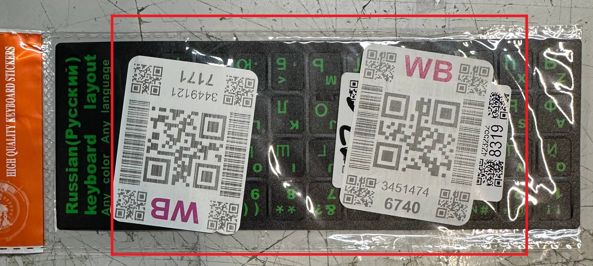
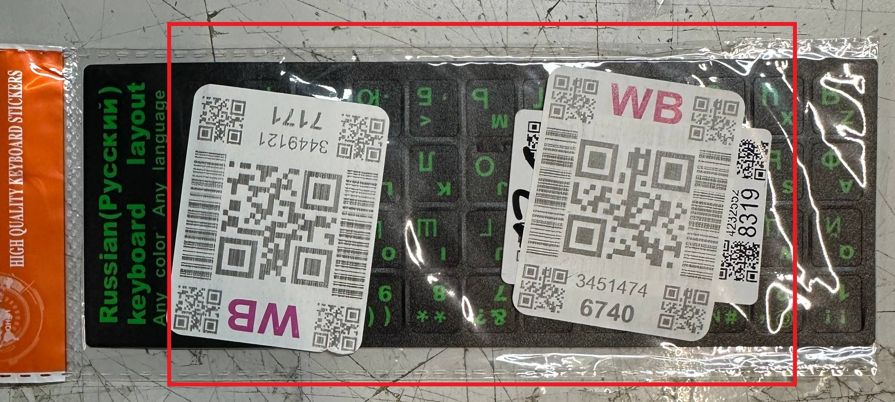
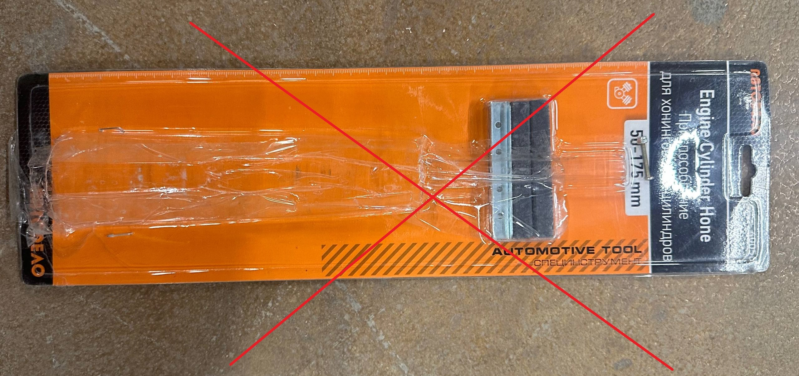
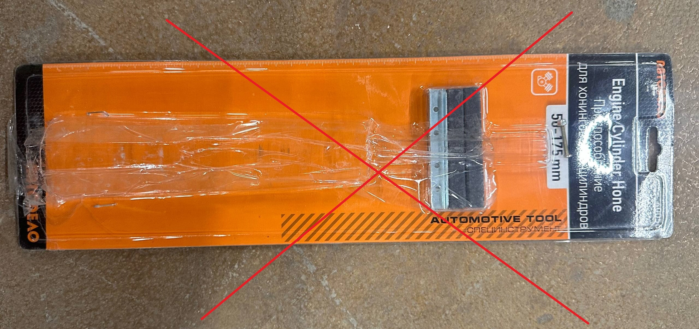
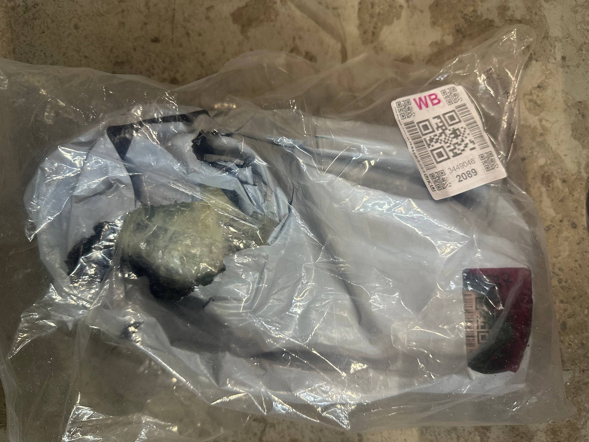
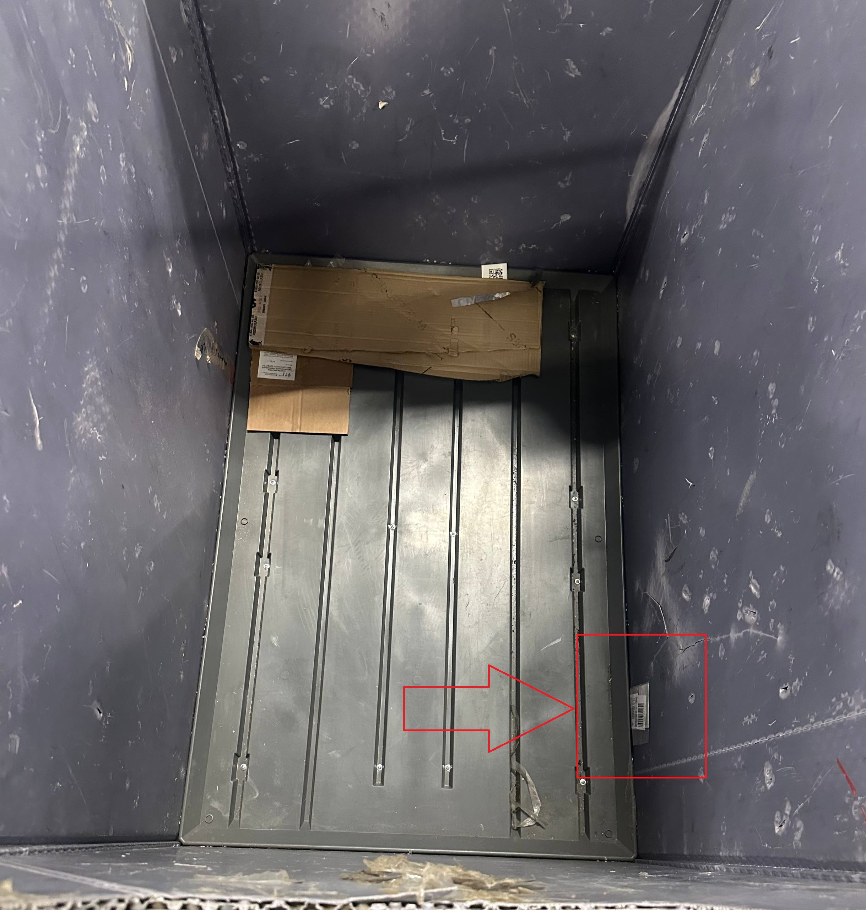
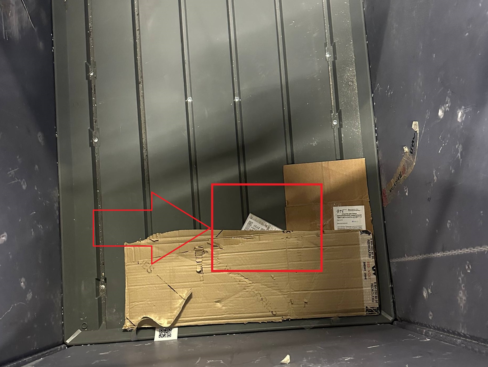

Операция "Предсортировка"
Предсортировка — это процесс первичной сортировки товаров, поступивших на СЦ.
Оборудование, необходимое для работы на предсортировке
Для работы на участке "Предсортировка" нам понадобится следующее оборудование:
-
Сканер Urovo SR5600

-
Телефон на базе Android
-
Крепление (резинки)

* Сканер можно получить у старшего смены.
Подготовка квадрата предсортировки для работы
Перед началом работы на предсортировке необходимо подготовить квадрат для работы. Для этого нужно выставить тары на квадрате предсортировки. Их количество должно соответствовать количеству направлений сортировки. Также необходимо убедиться, что тара физически пустая и в ней отсутствует товар.

Затем следует убедиться, что тара чистая и программно. Для этого заходим в модуль «Прочее» > «Служебное» > «Очистка сетки».
Далее сканируем QR места хранения (МХ) для очистки.
Возле квадрата предсортировки сканируем тару для проверки. Если тара чиста, на экране мы увидим следующую надпись:
В случае, если в таре программно числятся вещи, нажимаем «Очистить».
! ВНИМАНИЕ ! Если в таре числится более 5 вещей, как показано ниже, необходимо обратиться к старшему.
После проверки/очистки тары, необходимо припарковать тару программно на своё рабочее место. Для этого необходимо зайти в модуль «Сортировка» > «Сорт в сетки (тест) 2» и отсканировать QR МХ своего квадрата сортировки.


На экране появится надпись «Найти сетку с вещами для сорта?». Следует нажать кнопку «НЕТ».
Затем на телефоне следует нажать кнопку «Уменьшение громкости». На экране появляется надпись, требующая отсканировать МХ парковки для парковки сетки:

Сканируем QR места парковки тары для работы, затем саму пустую тару.

По примеру парковки одной тары, проделать те же действия необходимо для парковки остальных тар. После этого квадрат будет готов к работе.
Начало работы на предсортировке
Для начала работы необходимо выполнить следующие действия:
-
Заходим в модуль «Сортировка» > «Сорт в сетку (тест) 2»
-
Сканируем QR/МХ квадрата, на котором будете работать.

-
На экране с вопросом «Найти сетку с вещами для сорта?» нажимаем «ДА».
На экране появится информация, которая содержит последние четыре цифры номера сетки, которую Вам необходимо обработать на квадрате сортировки.
Находим требуемую тару, сканируем шильдик на ней, затем снова сканируем QR МХ квадрата сортировки, на котором работаем.
Из тары, взятой в работу, берем товар и сканируем ВБ стикер, находящийся на нём.
После этого на экране телефона отобразится номер тары, в которую необходимо поместить товар. Кладём товар в требуемую тару и повторяем аналогичные действия с другими товарами, находящимися в таре.
После заполнения тары, стоящей на парковке, её необходимо программно отвязать. Для этого выполняем следующие шаги:
-
1. Нажимаем кнопку «Уменьшение громкости на телефоне».
-
2. Сканируем QR МХ места парковки сменяемой тары
-
3. Сканируем шильдик сменяемой тары
-
4. Сканируем шильдик тары, подготовленной для замены.
Основные ошибки при работе на предсортировке:
-
Сортировка товара с двумя ВБ стикерами. При обнаружении такого товара пикать любой из стикеров КАТЕГОРИЧЕСКИ ЗАПРЕЩЕНО. Такой товар необходимо отнести старшему.
 
 -
Сортировка пустых пакетов/коробок. Пустые пакеты/коробки мы не сканируем, а сразу относим старшему.
 
 -
Сортировка бракованного товара. Товар может быть разбит/разлит. При обнаружении бракованного товара также обратитесь к старшему и следуйте его инструкциям. Примеры товара с браком показаны ниже.
 -
При завершении сортировки товара из тары, многие сотрудники не проверяют тару на наличие мелкого товара. Примеры показаны ниже:
